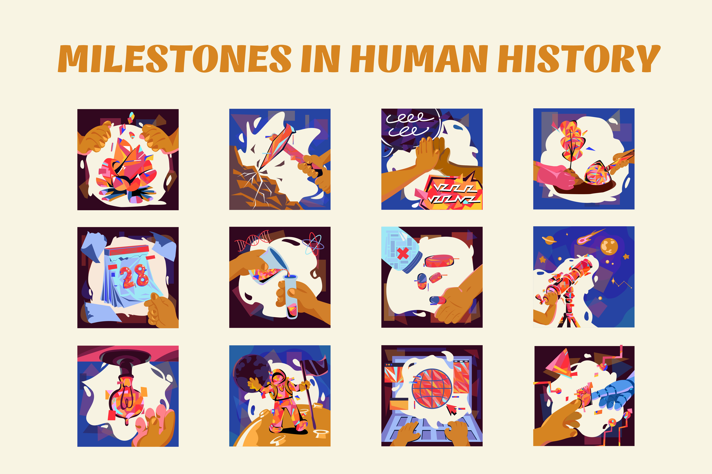
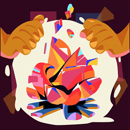
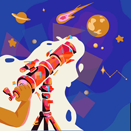

Milestones in human history
A group project with Lianna, Minh Chau, Phuc Duong, and Ky Anh
Having chosen the theme of “Historical Eras and Figures” concept around humankind most important milestones. We chose to design the 12 icons in a cherishable manner, celebrating their significance with a modern look and a bright color palette. This project aims to look back and showcase these milestones in a positive light and how they can emit hope and ambitions for the future.

